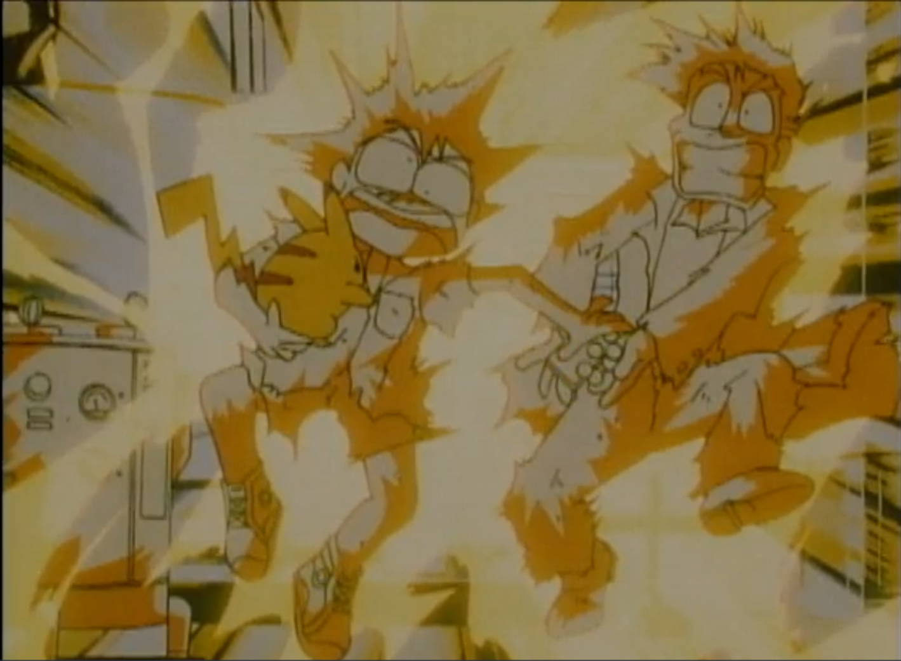
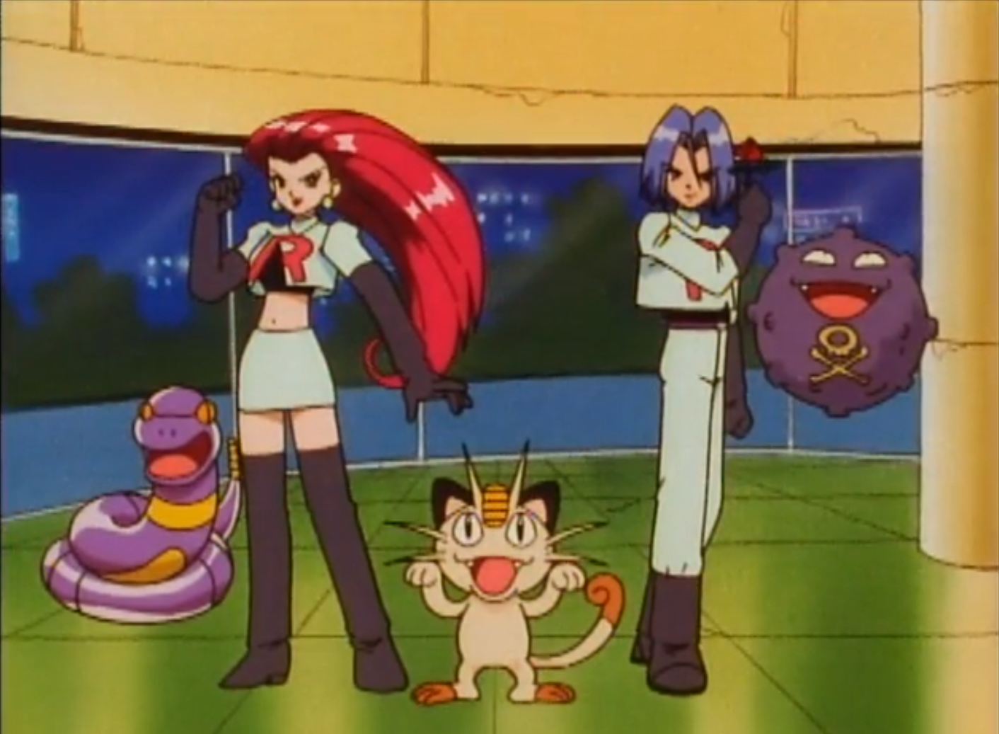
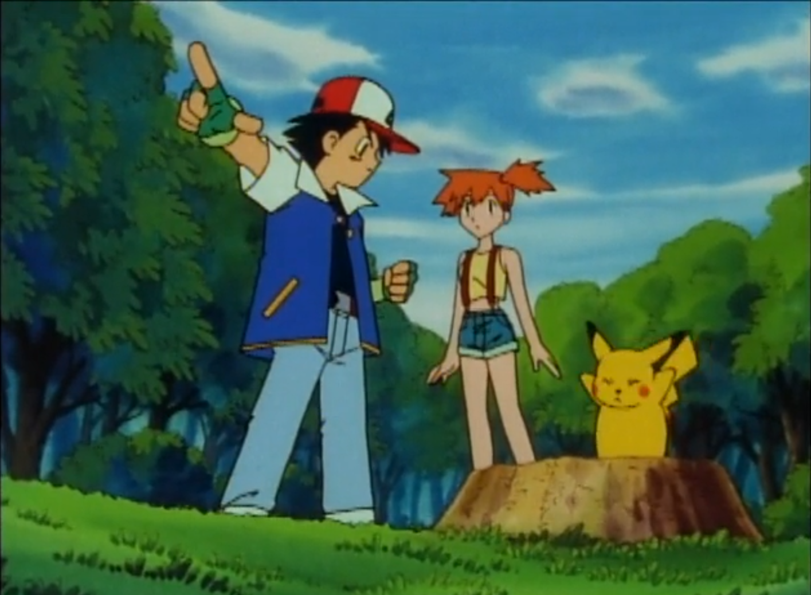

Meet Ash Ketchum, a 10-year-old boy full of imagination, confidence, and dreams that are almost too big for his village of Pallet Town—plus the desire to become a Pokémon Master!
Click here to watch!
Season 1| Episode 2

The city's on high alert for Pokémon thieves—thieves like Jessie, James, and Meowth of Team Rocket, a group of bad guys dedicated to stealing valuable Pokémon.
Click here to watch!
Season 1| Episode 3

Team Rocket shows up to steal Pikachu—they realize that there's really something special about this Pokémon—and Ash vows to defend himself.
Click here to watch!